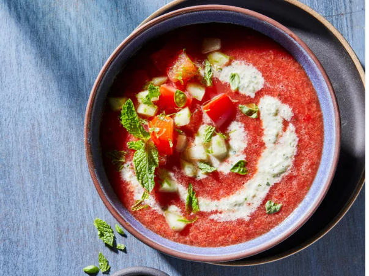

Watermelon Tomato Gazpacho with a Cool Cucumber Swirl

Description
A swirl of citrus-spiked cucumber crowns tomatoey watermelon gazpacho for a totally refreshing bowl.
Ingredients
3 cups coarsely chopped seedless watermelon
¼ cup finely diced seedless watermelon
3 large Roma tomatoes, halved and seeded
1 small red bell pepper, roughly chopped
4 green onions, sliced, white parts and tops separated
3 tablespoons lemon juice
1 ½ teaspoons lime zest
2 tablespoons lime juice
1 tablespoon chopped fresh mint
1 tablespoon honey
⅛ teaspoon crushed red pepper, or to taste
1 large cucumber, peeled and seeded
1 clove garlic, minced
2 tablespoons chopped fresh parsley
⅓ cup vegetable broth
¼ cup sour cream
¼ teaspoon salt
¼ teaspoon ground black pepper
Steps
For watermelon gazpacho, in a blender or food processor add coarsely chopped watermelon,
2 tomatoes, the bell pepper, the whites of green onions, 2 tablespoons lemon juice, 1 teaspoon
lime zest, the lime juice, mint, honey, and crushed red pepper. Cover and blend or process until
nearly smooth. Transfer to a large bowl. Chill, covered, 2 to 4 hours. Rinse blender or food
processor.
For cucumber soup, finely chop 1/4 of the cucumber and coarsely chop remaining portion.
Add coarsely chopped cucumber, garlic, parsley, green onion tops, and remaining lemon juice to
blender or food processor. Cover and blend or process until nearly smooth. Transfer to large bowl.
Stir in broth, sour cream, salt, and pepper. Chill, covered, 2 to 4 hours.
For tomato topper, chop remaining tomato into 1/2-inch pieces and add to small bowl. Stir in
reserved finely chopped watermelon, finely chopped cucumber, and remaining lime zest. Chill,
covered, until ready to serve.
To serve, ladle about 1 cup watermelon gazpacho into each bowl. Top each serving with about
1/2 cup cucumber soup and swirl slightly. Top with tomato topper and , if you like, additional
black pepper and mint.